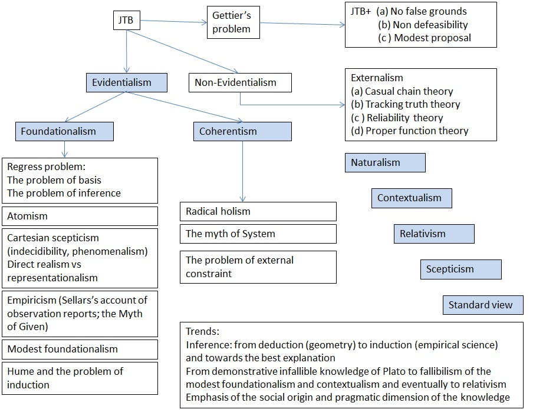

2.3 Contingent epistemology
Our goal is to figure out the truth value of statements pertaining to existential status of storied-worlds. Whatever
conclusions we reach, we would like these conclusions to be justified, so that our claims express the knowledge rather
than merely opinion. In chapter 1 we considered a number of different storied-worlds such as the world of science,
religious worlds and the world of stoics. Each of these worlds tells more or less coherent story but none of them is
fully coherent. In chapter 2, so far, we considered empirical evidence (observations) as another criterion for
discriminating between different storied worlds. We started with scientific models to show that, even in this case, when
the notion of observation (empirical evidence) is well established and unequivocal, there is no unique description of
the natural systems. Then we moved outside the natural science into philosophy, to highlight the limited understanding
we have about the nature of empirical evidence. We tentatively defined empirical evidence as an observation pointing to
real things, but the problem is that we do not quite understand the meaning of neither the notion of “observation” nor
the notion of “real”. We appealed to our intuition and online dictionaries to clarify the notion of “observation”. We
touched upon philosophy and investigated abstract entities, propositions, storied worlds and multiverse theories - all
these known as objects with poorly established existential status. We have discussed arguments for and against each of
these entities to emphasise the lack of the clear cut, black and white answer to the question of which of these entities
is real and which is not.
In this section I will provide more systematic account of various approaches towards the justification of our knowledge
claims. I will focus on epistemology – the branch of philosophy dealing with knowledge. The point I’m going to
illustrate through the reference to theories developed by others is that the definition of knowledge is not unequivocal
and includes substantial normative component. To large extent the definition of what we believe is knowledge, is not
discovered out there in the nature, but rather is invented and formulated by ourselves in order to achieve certain goals
that we think are important. I would like the reader to appreciate fundamental constraints blocking the road to
formulating a watertight definition of knowledge and acknowledge a flexible nature of this definition – we can play and
experiment with it and establish our own definition when needed.
Epistemology
Epistemology is concerned with a general theory of conditions under which people have knowledge and rational believes.
It seeks to find answers to such questions as, what is knowledge and how it is (or should be) distinguished from mere
belief or opinion? Do some subjects lie within the province of knowledge while others are fated to remain in the
province of opinion (or faith)? How is knowledge to be obtained or sought? Is it possible to obtain knowledge at all?
This last problem is pressing because there are powerful arguments, some very ancient, for the conclusion that it is
not. Is knowledge the only goal of inquiry, or are there other goals of equal (or greater) importance? We will return to
this question in the next section dealing with ethics and good life.
There are different kinds of knowledge, such as the knowledge understood as acquaintance with something (e.g. I know
Peter), or the knowledge of how to do something (I know how to swim), or the knowledge expressed by statements which
acknowledges existence of certain facts and phenomena and relations, sometimes called as the knowledge of “what” and
contrasted to the knowledge of “how”. Epistemology typically deals with the knowledge expressed by statements, the
knowledge of “what”. (Note that it is not obvious that the epistemic status of statements can always be established
within linguistic realm ignoring the realm of practice. There are arguments in support of a view that the final
justification of epistemological claims comes from social practices.) A storied-world is a collection of statements and,
hence, a legitimate subject of epistemological enquiries.
According to traditional epistemology, the mainstream definition of knowledge is a Justified True Belief (JTB). Figure
below gives a schematic representation of the key domains and directions of epistemological enquiry (at least as I see
it). This structure is clearly not all inclusive and to some extent is subjective. The main purpose of having it here is
to streamline and facilitate our discussion in this section. The material I present here draws heavily on writings by
Williams () and Feldman ().

Epistemology schema
Gettier problem
JTB definition of knowledge is too vacuous even when applied to relatively simple belief statements. It does not tell us
anything about the justification per se. Besides that, many philosophers believe that even this high-level definition is
incomplete in a sense that there might be JTB that we tend consider not knowledge (an issue known in epistemology as
Gettier problem). One of the examples provide an accidental knowledge, or the knowledge for wrong reasons. For example
(ref….), Peter saw a sheep in the field and, hence, believes that there is a sheep in the field. However, what he saw
was a dog, and his statement that he saw a sheep in the field is wrong. On the other hand, the conclusion he has reached
(there is a sheep in the field) is true because indeed there is a sheep in the field (which he did not see). Does his
knowledge that there is a sheep in the field, counts as knowledge?
It seems that, according to JTB, it does count as knowledge: Peter believes in truth, and his believe is justified by
observation. The fact that observation was wrong is beyond the scope of this definition because JTB says nothing about
the qualities of the justification, or what counts as a justification.
On the other hand, the Gettiers’ problem essentially is due to the reliance on the falsehood in some stage of the
inference. Some amendments have been proposed to address this issue (i.e. no reliance on falsehood, or no defeaters
theories). However, many philosophers believe there is no solution to Gettier’s problem. Others believe that the problem
is overstated, and we should not dwell too much on it. The question is not whether it can or cannot be solved, but
whether we should or should not solve it. Perhaps, we should leave it as it is and consider other more interesting
issues - the strategy we take in this manuscript. The interested reader is directed to textbooks on epistemology for
further details on this problem.
Method
It makes sense to comment here on the method typically employed to define knowledge. This method comprises both
subjective and objective ingredients. The way it works is that based on our experiences and intuitions we produce some
general schematic definition of knowledge and then test it against various particular cases representing what we
typically consider examples of knowledge. Some of these will fit into the schema, others will not and we either modify
the schema itself or sacrifice our intuitive understanding of some particular cases of knowledge. The final product is
the definition of knowledge which might be consistent with a ballpark of our intuitively accepted cases of knowledge but
may not fit all of them. And of course, this definition is not static and could evolve with time to accommodate new
specific examples of knowledge. The final, objective judgement in support of this or that definition of language comes
from practice.
The problem of justification
A contentious point of the JTB definition of knowledge is the justification problem. Say, you believe that this SW is
true. How do you justify this belief? There are two general strategies typically underpinning justification -
evidentalist and non-evidentialist, sometimes also called as internalist and externalist justifications, respectively.
Evidentialism is often considered a dominant, traditional approach to justification, while the non-evidetialism is
treated as a more recent and less established invention. One of the key members of the non-evidential methods is the
reliability theory of knowledge advocated by Nelson Goodman (ref…).
Reliability (externalism)
Advocates of the reliability theory do not dismiss altogether the significance of the evidence in epistemological
claims. Rather they argue that in many important cases this evidence does not come out explicitly or might not be
available at all. Vast amount of knowledge we have, particularly in modern days, comes from many different sources and
it is the reliability of these sources that matters as a criterion for knowledge claims rather than us making all the
tedious inferences and linking our statements to evidence. We may believe in the existence of electron particles but do
not pretend to be experts in micro-physics. We may not have expertise in weather prediction, but we believe
meteorologists (well sometimes at least). What matters today is that the source of the knowledge is reliable, rather
than explicit connection to the evidence. It does not mean that the evidence can be dismissed altogether. The trust
between the source of the knowledge and the receiver is based on an assumption that evidence can be furnished when such
a need arises. But as long as there are no such needs, then the reliability criterion is sufficient to establish the
validity of the knowledge claim.
Normative dimension is integral to reliabilism. Something reliable in one circumstance may not be considered
sufficiently reliable in another, higher risk condition. It is up to us to assess the level of risks, and to enquire
more or less stringent reliability conditions. “If we are to explain ordinary knowledge in terms of truth reliable
methods, we must insist that “reliability” be reliability with respect to some reasonable or normal range of conditions,
not with respect to every conceivable situation. This accords perfectly with our everyday account of reliability. My car
is reliable if it starts and runs in weather conditions that fall within the normal range for where I live. I would not
call it unreliable because it would not work so well at the South Pole or in the middle of the Sahara. Reliability is
incurably interest-relative notion. The standards for reliability are set by us, not by Nature. This means that there is
no hope of fully “naturalizing” epistemology by explaining knowledge in terms of reliability.” ref
The reliability is considered extrinsic criteria of knowledge, since one delegates the knowledge claim and the
associated linkage between statement and the evidence to the third party, to the source of knowledge.
Another possible interpretation of the reliability is a pragmatic evaluation of the belief. If there is some function
and purpose built into the statement, then we regard statements delivering on promise as true and statements which do
not, false. We will talk about this aspect of reliabilism in more details in the next chapter.
If we take onboard the reliability of sources as a criterion of knowledge about SW, then we need to clarify sources of
our SW. S-worlds are typically internalised during the childhood and then extended and modified throughout the life
time. Early childhood internalisation is predominantly a subconscious process influenced by significant others (parents,
friends, teachers) with a gradually increasing role of friends, educational institutions, mass media and in general
culture in later stages of internalisation. What does it mean to be a reliable parent, or reliable educational
institution, or a reliable culture? And does it make sense to talk about reliable culture without reference to the
recipient of that cultural education? Is a Buddhist culture a reliable source of knowledge for a scientist, for example?
When we talk about reliability of some scientific knowledge, we typically mean certain instructions that must be
followed in order to obtain that knowledge (e.g. rules of experiment). Do we have similar instructions when it comes to
developing storied-worlds? Could the notion of reliability, in this case, be associated with a reliable delivery of, for
example, well-being or the quality of life of those internalising this storied-world, rather than with a purely
epistemological considerations appealing to some abstract notion of truth? I’ll leave all these questions till next
section where we discuss well-being as a criterion for ranking different SWs.
Evidentalism (internalism) – Foundationalism and Coherentism
The dominant approach to justifying the knowledge claims is through the linkage of the statement to another statement
called evidence that supports (leads to) that statement. A number of fundamental problems are inherent to this approach.
One of those is an infinite regress problem. To justify statement A, we make a statement B, but to justify statement B
we make a statements C and so on. There are two basic approaches that address this problem - foundationalism and
coherentism. According to foundationalist there are, so called, basic beliefs that do not follow from any other belief
but are justified by some other means. All other beliefs that are not basic are inferred from the set of these basic
beliefs. These basic beliefs form a foundation on top of which one erects a superstructure of all other beliefs. An
alternative to foundationalism is coherentism. According to coherentism, a particular belief can be justified if it is
consistent with a manifold of many other beliefs integrated into coherent system of beliefs. There is no foundational
level in this system. The epistemological status of a statement is established through the evaluation of the consistency
of that statement with the network of other already integrated coherent beliefs.
Foundationalism - Cartesian dualism
Let’s have a closer look on foundationalism. Historical example of failed foudationalism provides Cartesian dualism.
Rene Descartes in 16 century undertook a magnificent project of building a theory of everything that would rest on the
most solid and reliable foundation. And what could we know with more certainty than our thoughts and feelings. I could
be mistaken by taking the ball-shaped figure on a tree to be an apple, but I could not be mistaken that it seems to me
to be an apple. I could be mistaken that the cut on my finger is the source of my pain, but I cannot be mistaken that I
feel pain. So, our thoughts and feelings underpin our basic beliefs which do not require other beliefs to be justified.
After a closer examination, however, it appears that such basic beliefs are not much useful. To see this, first we shell
discriminate between feelings and thoughts. If we consider only thoughts, we can notice that statements like “I seem to
see an apple” can be interpreted as emphasising our uncertainty of the epistemic status we assign to that statement
rather than an expression of indubitable knowledge. We do not know whether we see an apple or a pear, and the word
“seems” just emphasises this uncertainty, the lack of knowledge.
As for the claim about certainty of our feelings, we might be more confident with regard to some our feelings and could
be very dubious about other our feelings. When it comes, for example, to feeling of love, you may not always be in a
position to tell whether indeed what you fill is love or it is not. Perhaps pain, and a few other basic feelings (e.g.
fear, hunger, sleepiness, nausea) could be considered as indubitably known, but then the problem is to build up a
workable edifice of knowledge on top of such a scarce foundation.
Another issue with thoughts, feelings and perhaps some other sentiments is an uncertainty about which of these entities
we must consider as basic beliefs. Should we take a thought “I am a samurai”, or a feeling “I am a samurai” (or more
generally a certain awareness of a person being samurai as an experience of a sequence of events integrated over his
life time), should we consider at least some of these as a basic knowledge, something that we might be indubitable
about? Can we communicate this basic knowledge to others? Are we sure others have similar experience? How do we know
which of those provide indubitable foundations for knowledge? What happens with this knowledge if some experiences are
lost with time? There are quite a few questions to Cartesian foundationalism, and it is not obvious we gain much by
trying to work out decent answers to them. The bottom line is that our feelings and thoughts and in general experiences
may not be indubitable. And those which are – provide a poor foundation for knowledge.
Another critical issue with the Cartesian treatment of basic beliefs is that of Cartesian dualism. Once we agree that
only our thoughts and feelings can be known for sure, and there is an external world which we must doubt, the question
of communication between these two realms, internal and external worlds, immediately springs out and eventually leads to
the, so called, Cartesian scepticism of the external world. Cartesian scepticism is an umbrella term for the whole suite
of sceptical problems which doubt that we can have any knowledge at all. For example
- >How do we know that the external world exists at all and we are not just dreaming? We have immediate access only to
our thoughts and feelings – not to the external world per se.
-
How do we know that the micro-world really exists and is not just a theoretical construct invented to handle
large-scale phenomena? We have “immediate” observational access only to macroscopic phenomena.
-
How do we know that the past is real? If the world were created yesterday furnished with all the material evidence
about the past, we would not be able to notice the difference.
-
How do we know there are other minds? We can see only behaviour of others but cannot experience their thoughts or
feelings.
A popular image associated with the Cartesian dualism is a picture of the ghost in the head, who can see only images
inside the head. The ghost thinks these images come from an eye of the observer, but to be truthful and sceptical he
must admit that has no slightest idea where from these images really come. It could be a brain in a vat stimulated by
some evil scientist, it could be an image coming from a piece of a computer hardware designed by some future-generation
student, or he could be just dreaming about everything. The reader may argue that we are not just passive observers, but
we can act and change the flow of events inside the head and, perhaps, in the external world as well. So there must be
something else to our ghost, perhaps a joystick he can operate and react to the events inside the head. However, the
Cartesian dualist would reply that all your actions are just as delusional as any thoughts or feelings you may have. You
think you have a joystick, you think you interfere with the external world, but in reality what happens is that you
observe new images inside the head that show you acting and moving stuff around. You do not act. You only think so.
Fig Ghost in the head
The key point following from the Cartesian scepticism is that the whole world that we are so much concerned about may
not even exist, and in this case all out storied-worlds do not make much sense. The suggestion that the whole world may
not exist, may seem too strong to be taken as a serious argument against s-worlds, and yet, many philosophers, I think,
would take it seriously. Can we prove otherwise – that the world exists, and is not just dreamed out? I think, if we
stick to epistemology, we cannot. We may insist to believe that the world is real because, for example, it pays to be an
optimist, but this kind of arguments does not belong to epistemology.
Foundationalism - Empiricism
Another candidate to fulfil the role of basic beliefs is empirical evidence. Observations (which underpin science - one
of the most successful endeavours in recent history) may provide better foundation for our knowledge than
quasi-indubitable thoughts and feelings. We already touched on empirical evidence earlier in this chapter. In this
section we will recap and elaborate further our main findings from previous sections.
Empirical evidence imposes loose constraints on interpretations
Empirical evidence may not provide sufficient constraints to guarantee unique description of the system under
consideration be it an ecosystem model or the the description of the whole world. Subsequently in many interesting cases
we cannot single out one unique and true description of the system, but instead have an ensemble of interpretations. It
is up to us which interpretation to choose to build on.
Empirical evidence itself is not well defined
Another issue with empirical evidence is that we may have a limited understanding of what counts as empirical evidence.
It is not always obvious where to put the line separating empirical evidence and theory. Taking too restrictive stance
towards observations creates too poor foundation for knowledge. If we keep it too broad, then we may loose the utility
of such “knowledge” to our practices. If we settle on middle path, it is not obvious where to draw the line. In
different cultures people take different objects and phenomena to be real and hence amenable to observation. Depending
on which observations we take onboard, we tell different stories about ourselves and the world around us.
Holistic conception of knowledge
This argument elaborates and refines the previous one. In early 20th century, a movement in philosophy called logical
positivism advocated a privileged status of knowledge based on empirical evidence and logical inference as compared to
all other forms of knowledge. Empirical evidence was restricted to observations of the material world studied by
physics. Subsequently, only statements that can be verified either logically or empirically were considered meaningful.
Anything beyond that, including metaphysics, feelings, and any moral sentiments, was considered nonsense not worth
studying. If you cannot verify your theory either through logic or via observations, then there is no place for
knowledge.
Major blow to this program, according to Williams came from Sellars’s “Myth of Given: the assimilation of sapience to
sentience, the contentful thought to mere sensation.” The key point advocated against empiricism, I believe, was a
conception of a holistic nature of our belief networks with a two-way flow of information between the theory and
observations. The key difference between observation and the reflectory movement of amoeba, for example, is that
observations are theory loaded. When one observes a white car, the fact that he calls it a car rather than a white
moving spot implies that the observer knows something about structure, functions and the purpose of that car, and can
use that knowledge and observations to sustain some arguments in further discussions. To be able to observe a car, one
must have a mastery of language. When physicist observes elementary particles (analysing its track on the film) to make
such observation he must know the relevant theory. Pure observation without interpretative part does not make sense.
Another key ingredient of the holistic argument comprises practice, which is required to acquire knowledge. For a
physicist to conduct an experiment, he must be trained to do so. For a Buddhist to attain a certain meditative state, he
must be trained to do so. To summarise, observation does not exist without an accompanying luggage of language and
practice which produces and sustains this knowledge. Since language and practices vary from one culture to another, so
does the knowledge. To make it short – what you observe depends on what you believe and practice.
The problem of Induction
Further impediment to building empirical foundation of knowledge comes from the deficiency of the induction - the rule
of the logical inference which extrapolates observed sequence of entities to the unobserved ones. The sun will rise on
the east tomorrow because all previous days it has risen on the east. The problem with induction is that it always
indicates possibility rather than necessity. For example, all my previous birthdays I was less than 50 years old. It
does not follow from this observation, however, that this pattern will persist forever.
If we take observations as a foundation of our knowledge and use induction to build theories on top of it (a common
practice in science) then our knowledge is not infallible. The day may come when we wake up and see the sun rising on
the west, or have the pigs flying, etc. There is nothing in induction that can stop this from happening.
What about other rules of logical inference, for example, deduction? Deduction proceeds from a general knowledge to a
particular knowledge. All men are mortal. Socrates is a man. Hence, Socrates is mortal. If the premises are true (all
men are mortal), then conclusion is necessarily true (Socrates is mortal). We get knowledge here. The problem with
deduction, however, is that we may have no idea whether the premises are true or they are not. Williams puts it as
follows: “The rules of deduction are rules of entitlement, not rules of inference. They tell us what follows from what,
not what to believe on the basis of what. We may believe that P, and come to realise that P entails Q; but Q might be so
implausible that we ought to rethink our commitment to P rather than accept Q as an ineluctable consequence of a prior
belief. … all inference is “inductive” in that it is a matter of revising our total view so as to make it less ad hoc,
more plausible, more coherent. All inference is “inference to the best explanation”. Such holistic reasoning is a matter
of judgement rather than the rigid application of formal rules.”
The idea of the inference to the best explanation is important. Not all inductive inference takes the form of
extrapolation from observed correlations. There is also “abductive” inference, where we accept a hypothesis because
among all other possible explanations, this explanation seems the best. Say, we have conclusion B and a number of
premises A1, A2, A3 each leading to B. We know that B is true. The goal is to find the right A. Abductive inference says
that we pick, for example, A3 because it provides the best explanation of B, where the notion “best explanation” could
be referring to arguments beyond logic, or epistemology at all (e.g. aesthetic reasons, quality of life, appeals to the
folks wisdom etc). The problem is again, this inference indicates possible explanation but not necessary. The knowledge
based on such inference is not infallible.
To sum up our diversion into logic, whatever formal rules we employ to build a superstructure of theory on top of
observational foundation, we end up with a fallible structure. The knowledge we acquire through observations is not
infallible (in other worlds nothing we know can stop the rules of physics to fail some day).
Space of reason vs external world
While thoughts and feelings are typically considered the inner world of a human being, his so called “space of reason”,
the place of observations is not so unequivocal. According to one interpretation (direct realism) observations give us
direct access to the external world, and indeed are truthful descriptions of how that world really is. We might be wrong
about our theories and hypothesis, but observations provide a genuine and unique representation of the external world.
Another interpretation of observations (representationalism) follows builds on Cartesian dualism. Observations are just
images inside our heads and we have no idea what they really represent. Cartesian dualism implies that we know our
thoughts and feelings but have no idea what is the external world.
Coherentism
The following two ideas are central to coherentism:
1. Only beliefs can justify other beliefs.
2. There are no justified basic beliefs.
Coherentism takes holistic approach to defining knowledge. In its extreme form it states that the belief network
provides knowledge when it is self-consistent, and it is not when it includes a contradictory statement. With regard to
storied-worlds, as we saw earlier, all of them include contradictions and, hence, none of the considered SW express
knowledge. On the other hand, most of these worlds have at least some degree of the logical cohesion present in them and
we feel like at least some of them carry at least some knowledge.
To avoid extremes, we can formulate a mild form of coherentism. For example, a belief is justified (and hence expresses
knowledge) when it coheres with the major fraction of one’s system of beliefs. What counts as a ”major fraction of the
belief system” is a convoluted question and I do not want to spend on it the rest of this manuscript. For our purposes
it will be sufficient to observe that inconsistency detracts from the coherence of the belief system, and vice versa.
beliefs that constitute explanations for other beliefs in the system add to the coherence of that system. Factors like
this determine the coherence value of a whole system of beliefs. With this apparatus in hand, following Feldman, we can
formulate the following coherentist definition of knowledge:
S is justified in believing p iff the coherence value of S’s system of beliefs would be grater if it included a belief
in p than it would be if it did not include that belief.
Objections to coherentism:
1. The alternative systems objection. People who internalised different belief systems may justifiably believe
contradictory statements. Knowledge becomes relativised with respect to the whole network. In other words, conflicting
statements, in alternative systems, can be justified.
2. Generally, when one’s current system is incoherent because two beliefs conflict, there is an increase in coherence
from dropping either one. The theory says nothing about which one out of two conflicting belief systems to choose.
Hence, it is not obvious how to rank these systems.
3. The isolation objection. If only beliefs do the justifying, then experiences seem not to matter. Coherentism omits
from its account of justification something that seems absolutely central: our experiences. This objection is often
considered a main objection against coherentism.
4. It is not obvious what the notion of coherence actually means.
Preliminary summary
This section summarises what we have considered so far with regards to the justification of knowledge claim in the
context of JTB definition. We considered two major approaches to providing such justification - reliabilism and
evidentialism. Reliabilism is charged with a normative content, because it is up to us to decide what and in which
conditions counts as a reliable source, a reliable procedure, or a reliable technology, and what and when is not. With
regard to evidentialism we considered foundationalism and coherentism.
Foundationalism seeks to stop an infinite regress of justifications by introducing basic beliefs justified by anything
but other beliefs. There are two major incarnations of foundationalism called “Cartesian dualism” and “empiricism”.
According to the former, our immediate, indubitable thoughts and feelings constitute our basic beliefs, and thus
underpin the rest of our knowledge. The key problem with this account, however, is that very few beliefs and feelings
are indeed indubitable, and those which are provide too poor foundation to build on top of it a workable edifice of
knowledge. Another problem with this account is that via Cartesian dualism (internal and external worlds) a Cartesian
scepticism sneaks in– the belief that we have no knowledge about external world, micro-world, history and other minds.
According to “empiricism”, basic beliefs are given by empirical evidence (observations). The key problems with this
account of knowledge is that (a) same set of observations may have different equally valid interpretations, and hence we
have many different sometimes contradictory truths (b) Another issue is that the boundary between observations and
interpretations is not well defined. There are grey areas where it is not clear what we call an observation and what we
call a theory. To give a few examples consider elementary particles (do they exist or they are just theoretical
constructs?), or such notion as an “ecosystem health” (is it something we can observe or it is just a conceptual
entity?), or the notion of a “human being”, or a “life of samurai”, or nirvana, or afterlife etc. It is not always clear
what we call an observation. To be able to conduct an observation, one has to acquire certain knowledge and skills
through the learning and training. This learning and training is often culturally mediated thus introducing a feedback
from the interpretation to observations, in a sense that same set of practices may or may not count as an observation in
different cultures. (c) Finally, the third problem besetting empiricism is its reliance on induction which cannot
produce infallible knowledge.
Coherentism attempts to avoid these traps by introducing the notion of the coherence of the belief system as a criterion
of the truth value attached to that network. One of the major problems with this solution, however, is that it ignores
the role of empirical evidence in our knowledge. Besides that most storied worlds we considered so far are not coherent,
and it does not seem that we want them to be fully self-consistent.
The bottom line is that there is no one agreed upon definition of knowledge. There is plenty of room to experiment with
it and try new approaches to define it. Some of recent developments in this area are outlined below.
Other epistemological projects
Scepticism
A radical solution to the problem of knowledge provides scepticism, which claims there is no problem with knowledge
because there is no knowledge as such. The case is dismissed. Furthermore, not only we do not have knowledge, but also
we cannot have it for a number of reasons including infinite regress problem and Cartesian doubt of the external world.
Perhaps, the most natural response to the first problem is to identify beliefs that are justifiably held without
requiring further back-up - “basic beliefs”, but foundationalism is under clouds these days. An alternative approach
appealing to coherentism is basseted with its own problems. Cartesian scepticism has received its first clear
formulation in the writings of Descartes, around 350 years ago. Despite the enormous quantity of ink spilled over it,
there is still no agreed solution. How do I know that I am not dreaming right now?
There are no good epistemological solutions to either of these problems and yet there are arguments for and against
scepticism. One line of reasoning against Cartesian scepticism goes as follows:
“Take Descartes’s Evil Deceiver story: it offers no positive advantages over our normal view. There is nothing that it
explains that out standard view leaves out. On the contrary, to the extent that we could believe it at all, we could
still only get through life to the extent that we rely on the Deceiver’s simulacra of ordinary facts. Like the
paranoid’s delusion, this sceptical hypothesis can accommodate - after the fact – anything that our ordinary view turns
up. But it does not allow us to anticipate anything that our standard view does not. At the same time, while offering no
gains, the hypothesis entails clear loses. We do not know why the Deceiver is up to his tricks. Of course, we can
speculate, but nothing in the story suggests elaborating it one way rather than another. A deceiver based world view
would be more complicated, more ad hoc, but no more functional. Sceptical hypothesis, even if logically possible, may
justifiably be dismissed.” Ref
Naturalism
Naturalism is an epistemological view that succumbs to the bulling of scepticism. It says that since we never can fully
justify our beliefs, it makes no sense to trying to justify them. Instead of chasing this ghost (that we know we never
catch) it makes more sense to focus on something else. Science gives us a perfect example of how to acquire new
knowledge from empirical data. This knowledge is not watertight from the philosophical perspective, but it works.
Epistemology should follow this lead and focus on psychology and cognitive sciences. In other words, the domain of
epistemology must be restricted to that of empirical science. Anything beyond that is considered nonsense. One the
prominent advocates of this vision was Quine (a-a-h, again Quine).
Naturalism introduces the conception of the epistemology as the rules of knowledge which are out there in the nature,
independently of human perception, custom or artifice. These rules must be discovered analogously to the rules of
physics. According to Williams, this project is doomed to fail. “Epistemology does not resist naturalisation because it
deals with the super-natural, but because it is irreducibly normative. Of course, the question of what our epistemic
norms actually are is an empirical question. But once some account of these norms is on the table, the question of
whether to add or modify them is in the table too. In epistemology, the line between descriptive analysis and normative
proposal is never sharp. This point applies as much to non-justificational analysis as to more traditional approaches.
They are not just explications of our actual concept of knowledge but implicit normative proposals.”
Kuhnian conception of science
Normative and social factors are integral to Kuhnian two-phase model of the evolution of scientific knowledge. According
to this model, during the course of the “normal” scientific enquiry, the fundamental assumptions (theoretical and
methodological) underpinning the paradigm vision of science are simply not in question. The challenge for “normal
science” is to further refine theory, to take care of apparent anomalies, and to extend its application to new
phenomena. Characteristic activity of the “normal scientist” is not to debate about fundamentals but “puzzle solving”.
Conversely, in a revolutionary phase there are no rules to guide the research. When a new theoretical paradigm emerges,
the grounds for preferring it will not be straightforwardly observational but will also involve broad holistic
considerations of economy and elegance. Once the new theory is in place, erstwhile anomalies come to be seen as
refutations of the former system. A scientific revolution has taken place and a new period of “normal science” begins.
According to Williams, “Kuhn has a pronounced tendency to emphasise the non-rational elements in scientific change. For
example, he notes that older scientists who have given their lives to a certain type of research may be unwilling to
abandon it. The triumph of a new paradigm may therefore depend as much on this generation’s dying off as it does on
decisive confirmation or refutation, as more traditional philosophers of science understand such things. This aspect of
Kuhn’s work has done a great deal to encourage the so-called strong program in the sociology of knowledge which is
supposed to show that physics is just a social construction… He is known for making provocative remarks about how
scientists on opposite sides of a revolutionary change live in “different worlds”, so that their theoretical views are
“incommensurable”. … However, nothing in Kuhn’s account of science mandates such extreme reactions….We should not read
much into this talk. The body of scientific knowledge, in fact, is incredibly stable, and all the previous revolutions
in science have been just refining and extending isolated domains of that structure”.
Standard view
Another solution to the problem of scepticism is to postulate the existence of knowledge. For example, Feldman
introduces so called The Standard View by stating in a systematic way some commonly (but not universally) held ideas
about what we know and how we know these things.
The first thesis within The Standard View states that we have knowledge in the following categories:
- our immediate environment
-
our own thoughts and feelings
-
commonsense facts about the world (France is a country in Europe)
-
scientific facts (the earth revolves around sun)
-
mental states of others
-
the past (George Washington was te first president of USA)
-
mathematics
-
conceptual truth (red is a colour)
-
morality
-
the future
-
religion (God exists)
The second thesis of the Standard View lists the primary sources of knowledge (a-f)
-
Perception
-
Memory
-
Testimony
-
Introspection
-
Reasoning
-
Rational insight (some conceptual truth that we just know)
The problem with this account of knowledge, however, is that it does not provide a unique definition of knowledge and
does not help us in discriminating between different rival theories. Numerous questions arise when we reflect on The
Standard View: Why this set of postulates rather than some other? Under what conditions does one know something to be
true? Under what conditions is belief justified (or rational or reasonable)? Are there universal standards of
rationality applicable to all people at all times, etcetera?
Modest foundationalism
According to “modest foundationalism”, we cut the infinite chain of justificatory regression by postulating some basic
beliefs. The credibility attached to these beliefs amounts to only prima facie justification, which may be overridden
with time to accommodate new knowledge. The knowledge is not eternal and infallible anymore. When new facts are
discovered we may revisit our earlier beliefs and adjust them properly.
Contextualism
Contextualism is somewhat similar to foundationalism. This view holds that all justification takes place in a context of
presuppositions and many of these presuppositions are not currently under scrutiny. These presuppositions can themselves
be articulated and challenged when needed, but that will involve presuppositions of their own. Contextual factors
determine the severity of our standards (and also the direction of the enquiry) when we claim knowledge. For example,
when we study history, we take it for granted that the world wasn’t created five minutes ago, even though we may not be
able to prove it. We take this presupposition for granted, unless there are reasons to believe otherwise. This level of
scrutiny is sufficient for studying history. When it comes to the study in philosophy, however, we may not be willing to
take this presupposition for granted. In this case the sceptical view remains a challenge to our study and it may
question our subsequent claims for knowledge.
This sounds very close to relativism, but according to Williams it is not - “it is one thing to say that, when
theoretical choices have to be made, there is no algorithm that singles out a uniquely right answer, it is something
else again to say that it never matters what choice we make, or that any choice is always as good as any other…. An
amusing example due to Thomas Nigel makes the point. Suppose I adopt the theory that eating lots of ice cream is the way
to lose weight. It is true that in testing my theory on a bathroom scales I am taking for granted a lot of extra
theoretical ideas, for example, the principles of mechanics that determine how the readings on the scale correspond to
different weights. But it would be lunacy for me to conclude, in the face of the constantly rosing numbers I encounter,
that my diet must be affecting the laws of mechanics. One reason for this is that I have to take those same laws for
granted in many other inquires. Since they are effectively held fast, my weird dietary ideas are what have to go. It is
not contextualism but an ill-thought-out form of radical holism that encourages relativism and irrationalism. It does so
by encouraging us to see empirical inference as a largely unconstrained choice between competing “total views” in which
anything and everything is up for grabs. Something like this form of holism may lie behind Kuhn’s talk of ‘different
worlds’. “
Relaitivism
Relativist is a disappointed foundationalist, who claims that there is not one but many foundations for knowledge and
hence there must be many truths. I am sympathetic with this view even sough it is pregnant with contradictions – the
reason it is being dismissed outright by many thinkers. In chapter three we will have a closer look into means of
accommodating relativistic ideas into the multiverse framework to filter out contradictions and reconcile relativism
with reason.
Trends in epistemology
During the time of Plato, the ideal of knowledge was conceived as statements derived from axiomatic systems through the
deductive inference (e.g. theorems in geometry). The knowledge was meant to be infallible and last forever, expressing
eternal truth. This strict conception of knowledge, however, appeared to be too narrow and stiff to accommodate many
other useful beliefs we may want to call knowledge today. A huge amount of empirical scientific knowledge, for example,
does not count as knowledge on this account because it builds on induction which is not particularly suited for
delivering eternal truth. In order to reconcile science and philosophy, the definition of knowledge had been gradually
relaxed with time and extended to accommodate fallibilistic views of the foundationalism. The ideal of the legitimate
inference as that based on the deduction has been stretched towards induction. With the rise of the postmodern thought
(the science being pushed from the forefront to the back-stage of the culture) the field of the legitimate inference has
been enriched further by the addition of the explanation to the best reason (abduction). The definition of knowledge has
been eroded by the growing emphasis on the normative, social and pragmatic dimensions of knowledge.
To summarise, the notion of knowledge is not static, universally agreed upon entity. Its definition has been evolving
through time adjusting to our practices. These adjustments have been particularly prominent in recent time. According to
Williams, “It is a fairly recent innovation to extend knowledge to beliefs that are well supported but not strictly
entitled by the evidence we have for them. Within the abstract framework of the standard analysis, a conceptual
revolution has taken place.”
Richard Rorty’s pragmatic relativism
To conclude our review of different schools and trends in epistemology, I shall give in this section a very brief
outline of the vision of the epistemology and philosophy advocated by Richard Rorty - one of the most prominent
philosophers of the 20th century. Unless otherwise stated, italicised text in this section is from “Contingency, Irony
and Solidarity” by Richard Rorty.
According to Rorty, we should not have bothered consulting epistemology in this manuscript at all. He dismisses the role
of philosophy, and epistemology in particular, as a “cultural overseer who knows everyone’s common ground – the Platonic
philosopher-king who knows what everybody else is really doing whether they know it or not, because he knows about the
ultimate context (the Forms, the Mind, the Language) within which they are doing it.” The epistemology cannot fulfil
this task because there is no such thing as a universal truth out there in the nature to be discovered by a human being.
Neither our interpretation of the world, nor our description of ourselves, nor the description of our communities are
immutable - they are all subject to random forces and choices that we make.
Misleading metaphor
For Rorty, the reason we get attached to the idea of the universal truth waiting for us to be discovered in the nature
is an unfortunate analogy drawn between the physical eye and a mental eye which is meant to see universals (ideas) out
there in the realm of mental stuff - “The metaphor of knowing general truths by internalising universals, just as the
eye of the body knows particulars by internalising their individual colours and shapes, was, once suggested,
sufficiently powerful to become the intellectual’s substitute for the peasant’s belief in life among the shades.”
He believes, we should get rid of this misleading metaphor and once we abandon it, we can see that truth is made rather
than being discovered. “Since truth is a property of sentences, since sentences are dependent for their existence upon
vocabularies, and since vocabularies are made by human beings, so are truths.“
He goes on further referring to Nietzschean “the truth is just an army of mobile metaphors” to insist that “… the world
does not provide us with any criterion of choice between alternative metaphors, that we can only compare languages and
metaphors with one another, not with something beyond language called “fact”. This sounds very much a coherentist
account of justification of knowledge, and indeed Rorty seems to endorse this view “…we can think of knowledge as a
relation to propositions, and thus of justification as a relation between the propositions in question and other
propositions from which the former may be inferred.”. “… nothing counts as justification unless by reference to what we
already accept, and that there is no way to get outside our beliefs and our language so as to find some tests other than
coherence.”
Pragmatism
Rorty’s coherentilsm is marked with an essential, I would say, defining feature – it is rooted in pragmatism. Remember
that one of the main objections to coherentism arises from the argument of isolation of this theory from the
observational data. Rorty’s pragmatism is an attempt to break this isolating crust - “To say that we should drop the
idea of truth as out there waiting to be discovered is not to say that we have discovered that, out there, there is no
truth. It is to say that our purposes would be served best by ceasing to see truth as a deep matter, as a topic of
philosophical interest, or “true” as a term which repays “analysis”. The conclusion he reaches from these pragmatic
considerations is that “The nature of truth” is as an unprofitable topic…” “
According to Rorty, we have more pressing needs today than chasing this elusive truth. We have to realise, in
particular, that our ability to understand each other and live together in a community without humiliating each other is
a much more important project than our capacity to reconcile various kinds of individual truths we may hold. And the
cultural hero, helping us to progress in this direction, is not a scientist or a priest but a poet, a novelist, an
artist, people who speak languages we all understand, people who can inspire and unite us.
Evolution of knowledge
Rorty borrows Kuhnian conception of the evolution of the scientific knowledge and extrapolates it towards knowledge in
general. According to this vision, the bulk of the truth-making happens during the revolutionary stage of the evolution
when new paradigms are established. Epistemology (the servant of the established old paradigms and stereotypes) has no
role to play in this process. The major player in the game during the revolution is hermeneutics – “ the study of an
abnormal discourse from the point of view of some normal discourse – the attempt to make some sense of what is going on
at a stage where we are still too unsure about it to describe it, and thereby to begin epistemological account of it.
The fact that hermeneutics inevitably takes some norm for granted makes it, so far forth, “Wiggish”.” Once new paradigms
are being established, epistemology kicks off providing the rules of the game in order to further polish and refine the
body of new knowledge on top of new foundations.
Holism
Coherentism and pragmatism, integrated into single entity, provide two key facets of the holistic treatment of knowledge
advocated by RR. “The notion of knowledge as accurate representation lends itself naturally to the notion that certain
sorts of representations, certain processes are “basic”, “privileged”, and “foundational”. The criticism of this notion
… are backed up with holistic arguments of the form: We will not be able to isolate basic elements except on the basis
of a prior knowledge of the whole fabric within which these elements occur.”
The following references, I think, provides a succinct summary of his interpretation of knowledge: “The question is not
whether human knowledge in fact has “foundations”, but whether it makes sense to suggest that it does – whether the idea
of epistemic or moral authority having a “ground” in nature is a coherent one. … If we see knowledge as a matter of
conversation and the social practice, rather than as an attempt to mirror nature, we will not be likely to envisage a
metaptractice which will be the critique of all possible forms of social practice. So holism produces… a conception of
philosophy which has nothing to do with the quest for certainty. … languages are made rather than found and truth is a
property of linguistic entities, or sentences.”
Criticism
Richard Rorty has been criticised for inconsistencies in his theory, to which he replied that never intended to build a
theory consistent with the established paradigms. I think, he could have referred also to what he calls edgifying
philosophers whose job is to stimulate discussion and open new channels of communication (rather than closing them by
discovering eternal truth as “normal” philosophers tend to do).
In my understanding, many choices made by RR are based on his subjective preferences rather than being justified
rationally, which is consistent with his motto of “no privileged representations” (meaning his own representation is
also one out of many other possible representations).
Concluding comments
Let me summarise our findings in this section. We learned that “epistemic norms, are standards that we set, not
standards imposed on us by ‘the nature of epistemic justification’ “. However, the fact that we set these standards does
not mean that we can set anything we like. There are constraints we tend impose on these standards to make them
reasonable. As Williams puts it :
“The question of how to understand the correctness of epistemic norms is important. … Bringing in interests, we can see
that likening epistemic standards to the rules of a game (the game of giving and asking for reasons) does not make them
arbitrary. After all the rules of football are not arbitrary. Rather, they are adapted to human physical capability, in
the light of our interest in playing a game with a certain level of competitiveness. If the goals were fifty feet wide,
scoring would be too easy. If they were two feet wide, no one would ever score. Similarly, with the standards of
justification: they can be evaluated in the light of our epistemic interests: avoiding errors, coming to believe
significant truths, improving our theories, and so on.”
Note that this view essentially extends the definition of epistemology from the domain of know-that statements to the
domain of know-how statements - the precondition of any knowing-that involves know-how essentially.